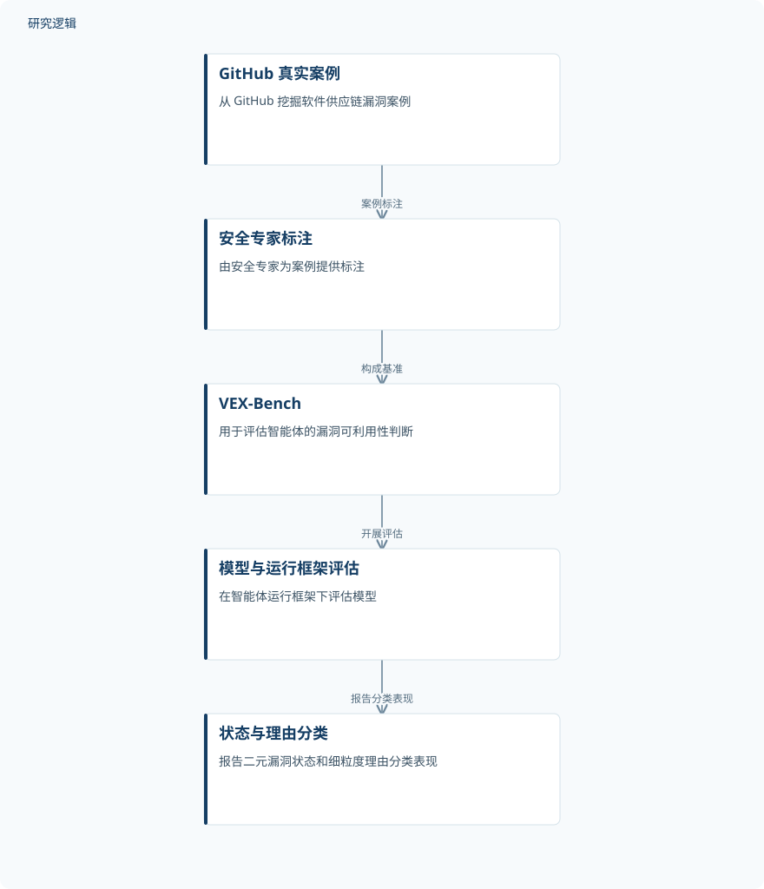

摘要解读
VEX-Bench：评测大语言模型智能体对软件供应链漏洞可利用性的判断能力
VEX-Bench: Benchmarking LLM Agents for Assessing Exploitability of Software Supply Chain Vulnerabilities
解读更新 2026-11-27 21:40 · 依据公开摘要整理，未核验全文细节
上游依赖存在已知漏洞，并不等于下游项目一定可以被攻击。VEX-Bench 将这一判断转化为大语言模型智能体的评测任务，帮助读者理解：给出风险结论与解释风险原因，可能是难度不同的两件事。
文章目录
从依赖漏洞告警到下游可利用性
软件供应链依赖复杂而脆弱，攻击面随之扩大。摘要指出，GitHub Dependabot 等现有防御工具的粗粒度匹配难以判断漏洞依赖是否真的可被利用，因此常产生大量误报；安全分析人员则需要逐案花费大量时间进行评估。
这一问题不同于侧重发现和利用未知漏洞的零日漏洞评测：供应链安全关注的是上游依赖中的已知漏洞如何影响下游项目。智能体不仅要识别漏洞，还需要跨仓库推理，判断它在具体下游项目中是否可被利用。
用真实案例评估跨仓库判断
作者提出 VEX-Bench，评估大语言模型智能体对软件供应链漏洞可利用性的判断能力。基准包含从 GitHub 挖掘、由安全专家标注的 75 个真实案例，覆盖 Python、Java 和 Go。
研究在三种智能体运行框架下评估了九个模型，报告了二元漏洞状态分类与细粒度理由分类的表现。摘要未进一步说明案例构建、标注细则或各运行框架的具体配置。
依据摘要整理的基准构建与评估


仅概括摘要明确陈述的案例来源、标注及评估环节，不表示未报告的实验配置。
下载 SVG图示关系说明
实线表示相邻阶段的信息流，虚线表示跨阶段联系或反馈。
GitHub 真实案例 → 安全专家标注：案例标注；安全专家标注 → VEX-Bench：构成基准；VEX-Bench → 模型与运行框架评估：开展评估；模型与运行框架评估 → 状态与理由分类：报告分类表现
判断漏洞状态，仍难解释具体原因
在二元漏洞状态分类中，GPT-5.5 和 Claude Opus 4.6 的 F1 均达到约 80%；但在细粒度理由分类中，只有 GPT-5.5 的 macro-F1 超过 70%。
这组结果表明，在所报告的评测中，从判断漏洞状态走向识别细粒度可利用性原因仍有挑战。摘要没有提供全部模型的逐项结果，因此不能据此推断其他模型之间的完整排序。
摘要尚不足以界定的评测范围
摘要给出了案例总数、来源和语言覆盖范围，但未说明案例在各语言或漏洞类型之间的分布，也未交代专家标注的一致性。仅凭这些信息，难以判断样本对更广泛软件项目的代表性。
摘要也未详细报告模型与运行框架之间的逐项比较、具体评测设置，以及基准之外的验证范围。因此，所列分数应理解为摘要报告的基准结果，而非已经证明智能体在所有实际场景中的表现。
阅读启发：把结论与理由分开审视
阅读启发：关注大语言模型智能体用于安全分析时，不妨同时追问它是否判断对了漏洞状态，以及给出的可利用性理由是否准确。进一步阅读时，可留意原文如何定义细粒度理由、组织跨仓库信息，并比较不同运行框架下的结果。
以上为本站阅读启发与建议，不是论文已验证的结论。